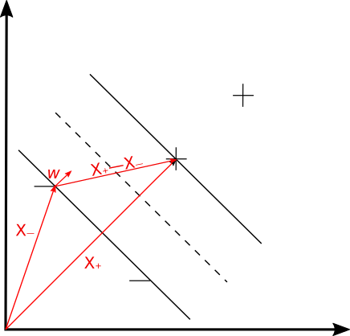
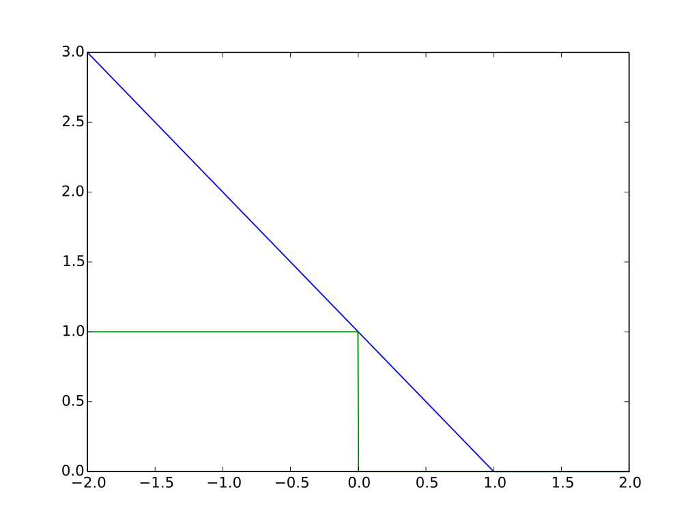

支持向量机（SVM）
4月份容器云项目投产，天天加班，人也变懒也变胖了，好在项目投产还算顺利，就不吐槽托节奏的队友了。
如今NN算法基本可以解决SVM能解决的所有问题，但是学习SVM还是有必要滴
这篇文章是SVM算法的开篇，准备先介绍原理和简单的推导，展示出SVM的核心内容及理解，下一篇再以量化交易作为实战来看一下调参的过程。
开篇的公式推导是少不了的，首先需要掌握一些基本的数学知识：
- 点到直线的距离计算；
- 向量A到向量B的投影长度计算；
- 拉格朗日对偶。
线性可分支持向量机
现在有两类数据（这里假设是二维数据点），分布在二维平面上，如图1所示，以符号+代表一类数据，-代表另外一类数据。我们要做的事情就是画一条线将这两类数据分开来，而画线的原则是使距离这条线（图中虚线所示）最近的任意数据点到虚线的距离最大，或者说要让图中黑色实线间的宽度最大。需要说明的是，目前这里只考虑线性可分的情况。

我们使用以下公式来判断数据点是否落在+分类中，该式也被称为Decision Rule
式中$\vec{w}$表示垂直于分隔线（图中虚线）的向量，表示任意数据点的向量表示(unknown)，表示一个与分割线相关的变量，所以，我们只要确定了和就可以据此确定任意一个数据点属于哪个分类了。
这里可以回顾一下解析几何中点到直线的距离公式以及推导过程，方便理解公式。
接下来，我们规定，+数据代入Decision Rule得到的值大于1，而-数据代入Decision Rule得到的值小于-1，这个是可以做到的并且对于之后的操作是有好处的：
mathematica convenient
引入变量：
这标记数据其实挺有道理的，另外，数学表达上也更为便利，
哎呀～，+数据和-数据表达式上统一了，这就是mathematica convenient了：
这里需要说明一下，当数据点恰好落在gutter上（图1中的实黑线）时，有：
下面，我们想要让两条黑色实线之间的宽度（width of street）越大越好（seperate the samples as wide as possible.）如图1所示，计算宽度：距离分割线最近的+点用向量来表示，距离分割线最近的-点用向量来表示，那么宽度的计算就可以用向量在向量上的投影来表示了，注意是垂直于分割线的向量，所以：
其中，由公式(5)得到 而 ，所以：
得到了宽度的表达式后，要做的事情就变成了使宽度最大化：
此时问题已经转化为：
上述问题的优化可以使用拉格朗日乘数法，定义L:
有些材料里面还会引入项，似乎看起来没有必要。此外，为啥约束条件是被减去而不是加上呢，可以思考一下
令：
这式(11)说明两点信息：1. 只和个别数据相关，因为可能为0；2. 之间是有约束的，加权和为0。
将式(11)代回式(10)，得到拉格朗日对偶问题：
下标仅仅是为了区分，式(12)化简之后得到：
数学家告诉我们，SVM里拉格朗日对偶是满足强对偶条件的，现在的问题已经转化为求，并且该问题的解（注意需要满足约束条件）便是原始问题的解。在SVM算法中，式(13)的解法主要为SMO算法，由微软研究员提出。
推导至此，我们应当了解到：
- 所谓
支持向量就是这些对分割线（高维空间里是个超平面）产生影响的数据向量，这些数据点其实就是位于“黑色实线”上的点，或者叫做距离分割线的最近点，其他点的，对的确定没有贡献； - 强对偶下，对偶问题的解就是原始问题的解，并且对偶问题始终是一个Concave优化问题，所以SVM的解一定是全局唯一解，不会陷入局部最小值；
Decision Rule变为：
目标函数和Hinge Loss
上一部分介绍的是线性可分的支持向量机的推导，如果按照机器学习的“套路”，很难说清楚目标函数、优化算法这类概念。实际上，既然是二分类问题，那目标函数按理说应该是分类的准确性，优化的目标便是提升准确性。所以接下来稍微重构一下刚刚的问题，并简单介绍一下线性不可分（含有噪声信号）的情况如何使用SVM来做分类。
原问题：最小距离取最大
现在：分类准确是前提，定义Hinge Loss，“最小距离取最大”反而变成了一个约束项：
上式中，便是目标函数/损失函数的关键，如果分类正确l应该为0，如果分类错误将会变得很大（如下图蓝色实线所示），优化的方向便是使式(15)取最小值。如下图所示，蓝色实线表示Hinge Loss，绿色实线是理想情况下的loss，可以看到Hinge Loss在分类错误的情况下值会变的很大，而在分类正确的情况下还有部分缓冲（横轴在0.0-1.0之间的部分），这就有个好处了—Hinge Loss允许小部分的错误/非严格分类，一些资料里将这一特征称为惩罚部分，这也使得SVM拥有了天然的抗过拟合能力。

接下来引入松弛因子(slack variable)的概念来换一种表达方式:
当要求的是的最小值时式(16)和(17)是等价的，loss function又可以写成下式，式(17)则是约束条件：
核函数技巧
Dr. 李宏毅说SVM其实就是
Hinge Loss+Kernel Trick，我认为Kernel Trick才是使SVM真正被广泛使用的关键所在。
拉格朗日对偶和核函数技巧的关系
原问题转换为拉格朗日对偶问题还有一个非常强大的好处，由式(13)可知分割平面仅仅和相关，那么，将 和 做相同的feature mapping是不会影响分类结果的，于是式(13)可以写成如下形式：
两个向量的点乘是可以在某种程度上衡量两个向量的相似度的，这里数学家告诉我们只要满足Mercer’s Theory，就可以设计出一个核函数，对于非唯一的feature mapping函数，都有下面的式子成立：
也即，我们不必要知道具体的函数，只要将和代入核函数就行了，而这样计算明显比先做mapping再做inner product要快很多（虽然结果是等价的），这便是Kernel Trick。这样做的好处是可以对数据点进行升维，在低维空间中不可分的数据点，在高维空间则是可分的（反正总有办法让数据可分），坏处自然就是模型容易过拟合了。
各类核函数
多项式核：
径向基函数核（RBF）：维度太高，容易过拟合
Sigmiod核：可以理解成只有一个Hidden Layer的NN
SVM 与 SVR
用支持向量机来做回归问题其实也是可以的，不过并不是回归问题的主流方法。
总结
- 所谓
支持向量就是这些对分割线（高维空间里是个超平面）产生影响的数据向量，这些数据点其实就是位于“黑色实线”上的点，或者叫做距离分割线的最近点，其他点的，对的确定没有贡献； - 强对偶下，对偶问题的解就是原始问题的解，并且对偶问题始终是一个Concave优化问题，所以SVM的解一定是全局唯一解，不会陷入局部最小值；
Decision Rule变为：- 超平面就是data point的线性组合；
- SVM拥有了天然的去outliers抗过拟合能力；
- 线性不可分的问题，可以通过核函数的方法将低维问题进行升维来解决；
- 比较常用的核函数有多项式核函数以及高斯核函数；
- SVM也可以解决回归问题，对应SVR。
参考资料
- Vapnik V., “The nature of statistical learning theory,” Springer-Verlag, New-York, 1995.
- Vapnik V., “Statistical learning theory,” John Wiley, New-York, 1998.
- Vapnik V., “The support vector method of function estimation,” In Nonlinear Modeling: advanced black-box techniques, Suykens
- https://www.youtube.com/watch?v=QSEPStBgwRQ
- https://www.youtube.com/watch?v=_PwhiWxHK8o&pbjreload=10